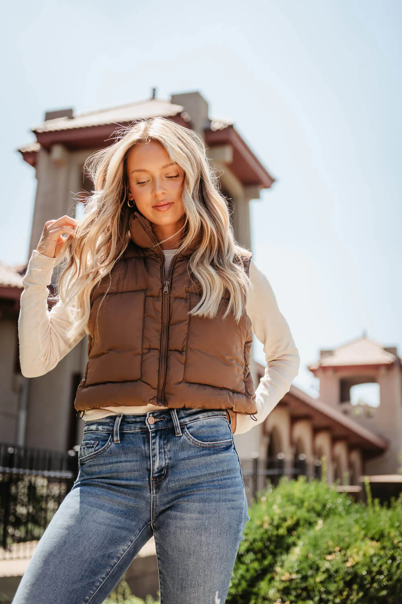
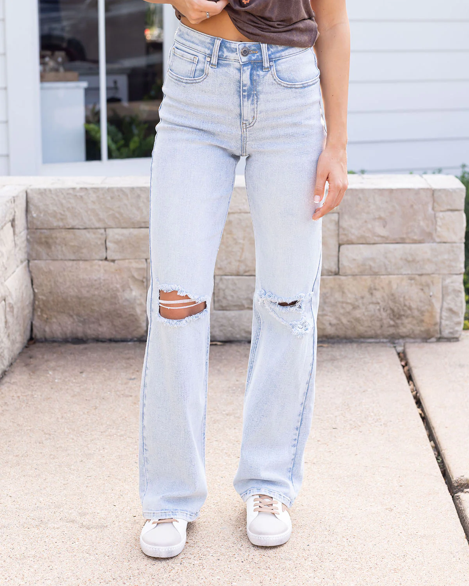
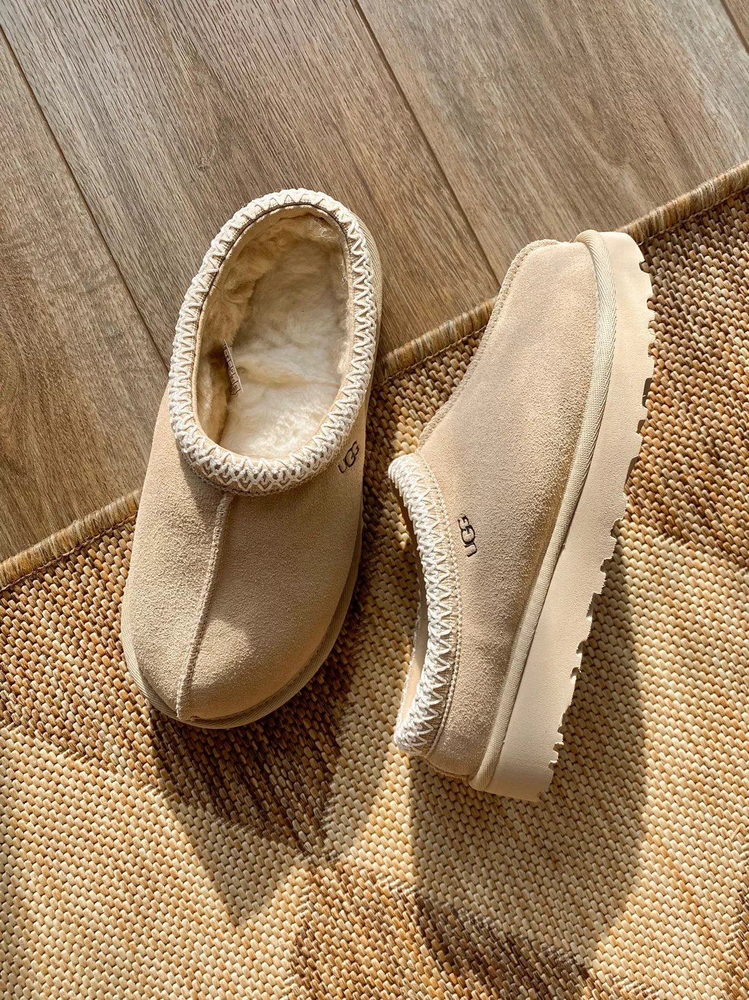

Fall is now in full swing and with a new season comes new trends. From my favorite wardrobe essentials, to my coffee order, here are a few of my must haves this season.
Fall Fashion Must Haves
Cropped Puffer Vest

Light Wash Jeans

Tazz Uggs

You cant go wrong with a puffer vest! I've been loving the cropped style so it lays just above the waistline. This adds warmth and elevates any simple outfit! Amazon has an affordable option here.
Light wash jeans are must all year round for me, but especially in the fall! I've been loving the Abercrombie and Fitch High Rise 90s Relaxed Jean
Uggs are very in trend this season! I was able to get a pair of the Tazz Uggs before they sold out. Not to mention they are the comfiest pair of shoes ever...they're slippers! The color I got were the Tazz Uggs in Mustard Seed.